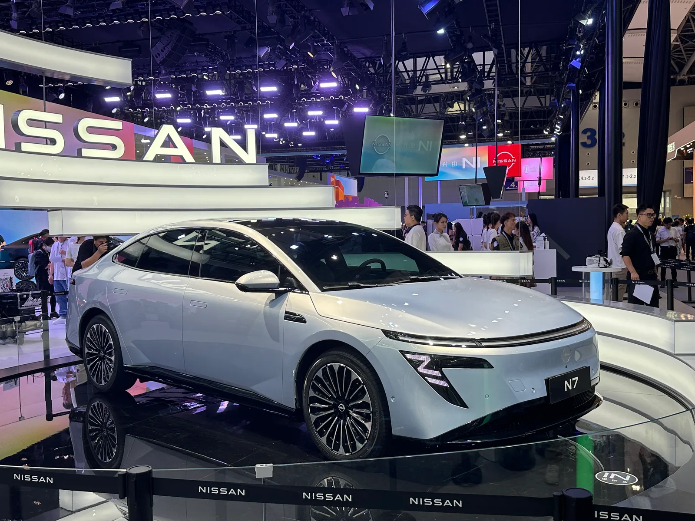
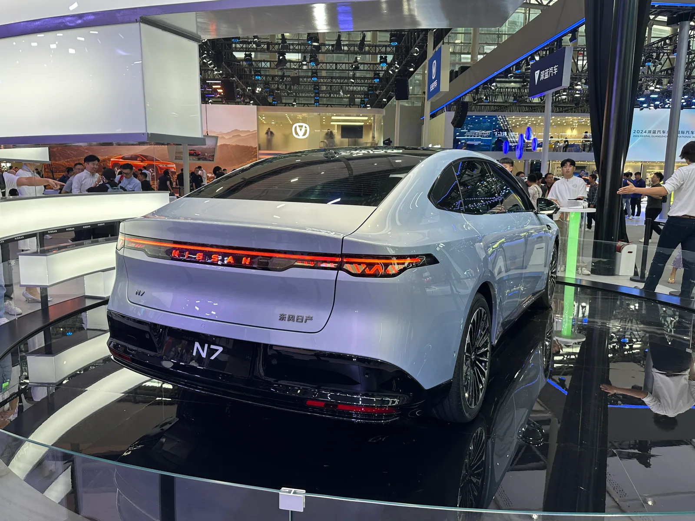
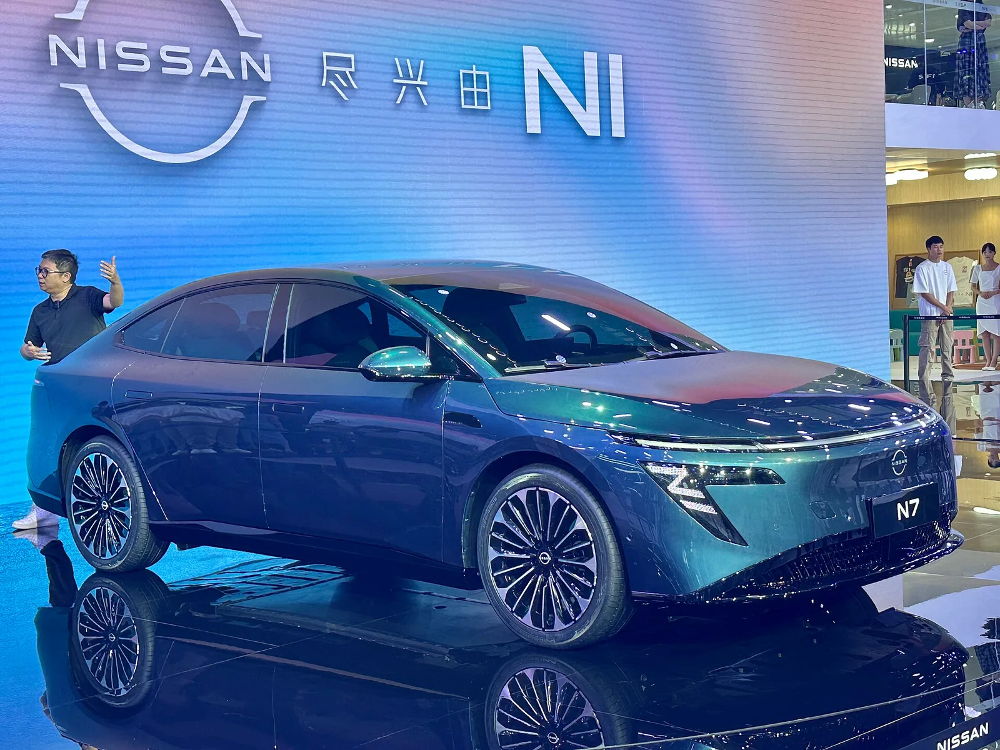
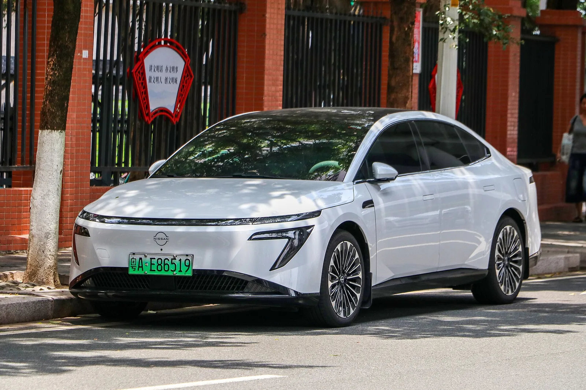

▲ 닛산의 중국 반격 카드인 전기 세단 N7. 이 차의 심장은 사실 둥펑의 플랫폼과 중국 모멘타의 자율주행 소프트웨어다 ⓒ Wikimedia Commons
불과 몇 년 전만 해도 방향은 정반대였다. 도요타와 닛산은 중국 합작사에 엔진과 플랫폼 기술을 '전수'하는 쪽이었고, 중국 파트너는 그 기술로 조립·생산을 맡는 역할이었다. 그런데 2026년 지금, 닛산의 중국 반격 카드인 전기 세단 N7의 인포테인먼트는 퀄컴 스냅드래곤 칩과 중국산 소프트웨어로 돌아가고, 도요타는 화웨이의 어드밴스드 운전자보조 시스템(ADS)까지 끌어와 쓰는 처지가 됐다.
닛산은 여기에 5년간 2조엔을 다시 베팅했다. 2021년 처음 발표됐던 'Ambition 2030' 전략의 중국 목표치, 즉 2026년까지 전동화 판매 비중 40%를 재확인하며 신차 공세를 이어가고 있는 것이다. 문제는 이 베팅의 실행 주체가 정작 중국 로컬 기술이라는 점이다.
1. 'Ambition 2030' 중국판 — 2조엔, 그리고 40%라는 숫자
닛산이 그리는 중국 전동화 로드맵의 뼈대는 이미 몇 년 전에 그려졌다. 2021년 11월 발표된 장기 비전 'Nissan Ambition 2030'에서 회사는 향후 5년간 2조엔을 투입해 전동화와 기술 혁신 속도를 끌어올리겠다고 밝혔다. 이 가운데 중국 시장에 배정된 목표가 2026년까지 전동화 판매 비중 40%다. 유럽(75% 이상)·일본(55%)보다는 낮지만 미국과 나란히 두 번째로 높은 수준의 목표치이자, 단일 국가 판매량으로는 닛산에게 가장 큰 시장을 겨냥한 숫자다.
| 지역 | 2026년 목표 전동화 비중 |
|---|---|
| 유럽 | 75% 이상 |
| 일본 | 55% |
| 중국 | 40% 이상 |
닛산은 이 목표를 위해 중국·일본·영국·미국 4개 주요 시장에서 전동화 차량과 배터리 생산 현지화를 추진하겠다고 밝힌 바 있다. 5년 내 20여 종의 EV·e-POWER(하이브리드) 신모델을 투입해 판매 비중을 끌어올린다는 계획이었는데, 2026년 현재 그 실행의 최전선에 있는 차종이 바로 둥펑닛산의 순수전기 세단 N7이다.
📍 원래 계획보다 늦어진 '재점화'
Ambition 2030은 2021년에 처음 공개된 청사진이지만, 2023~2024년 닛산의 중국 판매 부진과 경영난이 겹치며 실행 동력이 떨어졌다는 평가를 받았다. 2026년 들어 신차 N7·N6 등의 판매가 살아나면서, 회사 안팎에서는 5년 전 세웠던 '2026년 40%' 목표를 다시 소환해 중국 전략의 구심점으로 삼는 모습이 뚜렷해지고 있다.
2. 동펑닛산 NEV 판매 122% 증가 — 숫자는 화려하지만
수치만 보면 닛산의 중국 반격은 순항 중이다. 동펑닛산의 신에너지차(NEV) 판매는 2026년 1~7월 누계 기준 전년 동기 대비 122% 증가했다. 같은 기간 중국 내 합작사(JV) 브랜드 전체의 NEV 침투율도 16.5%에서 25.1%로 뛰어오르며, 그동안 로컬 브랜드에 밀려있던 외국계 합작사들이 반등하는 흐름과 맞물린다.

▲ N7 트렁크에 나란히 붙은 'NISSAN'과 '东风日产(둥펑닛산)' 배지 — 이 차의 정체성을 압축해서 보여준다 ⓒ Wikimedia Commons
N7은 출시 초반 흥행에 성공한 모델이었다. 2025년 4월 출시 후 첫 달에만 1만7,215대의 주문을 받았고, 이후 누적 주문이 2만 대를 넘어서기도 했다. 하지만 열기는 오래가지 못했다. 2026년 8월 소매 판매는 928대로, 전년 같은 달(1만 대 이상)에 비해 급감했다. 이에 둥펑닛산은 2026년 9월 22일, 라이다(LiDAR) 탑재 트림을 추가하고 한시적으로 10만9,900위안(약 1만6,290달러)부터 시작하는 가격으로 N7 페이스리프트를 출시하며 반등을 시도하고 있다.
✅ N7이 보여주는 '숫자와 체감의 괴리'
· 1~7월 누계 NEV 판매 +122%라는 숫자는 기저효과(작년 판매가 워낙 적었던 영향)를 포함한 수치
· N7 단일 모델은 출시 초 흥행 → 8월 928대까지 급락 → 페이스리프트로 재도전하는 롤러코스터를 거치는 중
· 즉 'Ambition 2030'의 성과는 아직 안정적인 성장 곡선이 아니라, 신차 효과에 크게 의존하는 구조
3. N7의 심장은 중국산 — 로컬 기술에 기대는 닛산
여기서 이 기사의 핵심 역설이 드러난다. 판매를 이끄는 N7의 기술적 뼈대는 닛산이 아니라 둥펑모터의 전기차 아키텍처에서 나온다. N7은 둥펑의 eπ(이파이) 007과 플랫폼을 공유하는 것으로 알려져 있고, 실내 인포테인먼트는 퀄컴 스냅드래곤 8295P 칩과 '닛산 OS 2.0'을 기반으로 대형언어모델(LLM) 음성 인식을 지원한다. 운전자보조 시스템은 중국 자율주행 스타트업 모멘타(Momenta)와 공동 개발한 비전 기반 내비게이션 주행보조(NOA)로, 2026년 9월 페이스리프트부터는 라이다와 퀄컴 스냅드래곤 8650P 칩을 더한 상위 트림도 추가됐다.
📍 합작사 모델의 역전
과거 중국 합작사(JV)는 도요타·닛산·혼다 같은 외국 파트너가 기술을 제공하고, 중국 측은 생산·판매망을 담당하는 구조였다. 그런데 전기차·소프트웨어 정의 차량(SDV) 시대로 넘어오면서 이 구도가 뒤집혔다. 배터리, 반도체, 스마트 콕핏, 운전자보조 소프트웨어 영역에서 중국 로컬 기업들의 기술 수준이 앞서면서, 이제는 외국 브랜드가 중국 파트너의 기술을 빌려 쓰는 쪽이 됐다는 평가가 나온다.
둥펑닛산의 N7 페이스리프트 출시 소식과 가격 정보는 아래에서 확인할 수 있다. N7 페이스리프트 가격·사양 바로가기

▲ 매끈한 유선형 실루엣의 N7 — 둥펑의 전기차 플랫폼을 기반으로 닛산 배지를 달았다 ⓒ Wikimedia Commons
4. 도요타도 같은 길 — 흩어진 R&D를 하나로
닛산만의 이야기가 아니다. 도요타 역시 중국 내 3개 합작사(FAW 도요타·GAC 도요타·BYD 도요타)에 흩어져 있던 연구개발(R&D) 조직을 통합하는 작업을 진행해왔다. 최대 R&D 거점의 이름을 'Intelligent ElectroMobility R&D Center by TOYOTA(IEM by TOYOTA)'로 바꾸고, 각 합작사 엔지니어들을 이 통합 조직 아래로 모으는 방식이다. 덴소와 도요타 자회사 아이신도 전동화 파워트레인 개발에 참여시켰다.
| 영역 | 내용 |
|---|---|
| 전동화 | BEV·PHEV·HEV·FCEV 등 현지 R&D 강화 |
| 스마트 콕핏 | 중국 소비자 취향에 맞춘 인포테인먼트·UX 설계·개발 가속화 |
| 자율주행·안전 | 중국 도로 환경에 최적화된 운전자보조·자율주행 기술 개발 |
도요타의 대응에서도 화웨이의 존재감이 뚜렷하다. 보도에 따르면 도요타의 플래그십 전기 세단 bZ7은 화웨이의 하모니OS 기반 콕핏 UI와 드라이브원(DriveONE) 전동화 모터를 결합했고, 라이다를 더한 운전자보조 기능은 모멘타와 함께 개발했다. 그 결과 도요타는 2025년 한 해 중국 판매 178만 대를 기록하며 4년 만에 처음으로 연간 판매 반등에 성공했다. 다만 이 흐름은 오래가지 못했다. 2026년 들어서는 도요타 역시 상반기 중국 판매가 전년 대비 두 자릿수%대로 감소했고 8월에는 낙폭이 20%대까지 커졌으며, 같은 기간 닛산과 혼다의 중국 판매도 두 자릿수, 많게는 절반 가까이 급감한 것으로 전해졌다.
📍 재무 여력의 차이는 있지만, '만능 해법'은 아니다
도요타와 닛산이 '중국 로컬 기술 수용'이라는 같은 전략을 택한 배경에는 다각화된 수익 구조와 탄탄한 재무 상태를 가진 도요타가 중국 혁신 기술에 접근하면서도 중국 로컬 업체들이 겪는 재무적 취약성은 떠안지 않는 '이익만 취하는' 포지셔닝이 가능했다는 평가가 있다. 다만 2026년 들어 도요타조차 다시 두 자릿수%대의 판매 감소를 겪은 데서 보듯, 중국 로컬 기술을 빌려 쓴다고 해서 판매 반등이 자동으로 보장되는 것은 아니라는 점도 함께 드러났다.
5. 왜 하필 지금 — 적자에 시달리는 닛산의 배경
닛산이 중국에 다시 2조엔을 베팅하는 배경에는 회사 전체의 위기감이 깔려 있다. 닛산은 2025회계연도(2025년 4월~2026년 3월) 순손실 5,331억엔을 기록했다. 직전 회계연도의 순손실 6,709억엔보다는 줄었지만, 2년 연속 대규모 적자라는 점은 변함없다. 연초 한때는 최대 6,500억엔(약 42억 달러) 규모의 손실을 예고하기도 했다.
✅ 닛산의 구조조정 'Re:Nissan' 플랜 주요 내용
· 이반 에스피노사(Ivan Espinosa) CEO 체제 하에서 전 세계 생산능력 축소, 인력 15% 감축 추진
· 일본 오파마(Oppama) 공장 폐쇄 발표, 본사 사옥 매각 등 자산 유동화
· 미국 관세, 공장 폐쇄 비용, 구조조정 비용이 실적 악화의 주요 원인으로 지목
· 2025회계연도 연간 영업이익 580억엔은 확보했고, 하반기부터 잉여현금흐름이 플러스로 전환
· 2026회계연도에는 순이익 200억엔 흑자 전환을 목표로 제시

▲ 실제 중국 도로(안후이성 허페이)에서 포착된 N7. 초록색 번호판은 중국의 신에너지차(NEV) 전용 번호판이다 ⓒ Wikimedia Commons
즉 닛산 입장에서 중국은 선택의 문제가 아니라 생존의 문제에 가깝다. 회사 전체가 대규모 구조조정을 벌이는 와중에도 중국 전동화 목표만큼은 물러서지 않는 이유가 여기에 있다. 다만 자체 기술만으로는 이 목표를 채울 여력이 부족하다는 것이 냉정한 현실이고, 그 공백을 메우는 것이 둥펑·모멘타 등 중국 로컬 기술이다.
6. 기술을 주던 쪽에서 빌려 쓰는 쪽으로 — 역설의 의미
이 흐름이 던지는 질문은 단순한 실적 반등 여부를 넘어선다. 수십 년간 일본 완성차는 중국 합작사에 엔진·변속기·플랫폼 기술을 전수하며 '기술 종주국'의 위치를 지켜왔다. 그런데 전동화·소프트웨어 정의 차량 시대에는 배터리 에너지 밀도, 스마트 콕핏 반응 속도, 운전자보조 소프트웨어의 완성도에서 중국 로컬 기업들이 앞서가는 영역이 늘었다.
📍 '기술 종속'이 아니라 '생존 전략'이라는 반론
다만 이를 단순히 '일본차의 굴복'으로만 해석하기는 어렵다는 시각도 있다. 완성차 업체 입장에서는 배터리·반도체·소프트웨어를 모두 자체 개발하는 대신, 이미 검증된 중국 로컬 기술을 빠르게 결합해 개발 속도와 비용 효율성을 확보하는 전략적 선택이라는 것이다. 실제로 도요타는 이 방식으로 2025년 4년 만의 판매 반등에 성공했지만, 2026년 들어서는 다시 두 자릿수%대 감소세로 돌아서며 이 전략의 지속가능성에 대한 의문도 함께 커지고 있다. 문제는 이 구조가 장기화될수록 완성차 업체의 핵심 경쟁력이 '브랜드'와 '조립·품질관리'로 축소될 위험이 있다는 점이다.
결국 닛산의 Ambition 2030과 도요타의 IEM by TOYOTA는 같은 문제에 대한 두 개의 답이다. 중국 시장에서 살아남으려면 중국의 기술 생태계 안으로 더 깊숙이 들어가야 한다는 것. 그 과정에서 일본 완성차가 얻는 것은 판매 반등의 가능성이고, 잃는 것은 기술 자립도라는 점에서 이 전략은 여전히 '역설'로 남는다.
7. 요약
닛산은 2021년 세운 'Ambition 2030' 전략의 중국 목표, 즉 2조엔 투자와 2026년 전동화 판매 비중 40%를 다시 전면에 내세웠다. 그 동력으로 지목되는 동펑닛산의 신에너지차 판매는 2026년 1~7월 전년 대비 122% 늘었지만, 이를 이끈 N7 세단의 플랫폼과 소프트웨어는 둥펑·모멘타 등 중국 로컬 기술에 크게 의존하고 있다.
도요타 역시 흩어진 중국 R&D를 'IEM by TOYOTA'로 통합하며 화웨이 기술을 적극 받아들이는 같은 길을 걷고 있고, 그 결과 2025년 4년 만의 중국 판매 반전에 성공했다. 하지만 2026년 들어서는 도요타·닛산·혼다 세 회사 모두 다시 두 자릿수%대의 판매 감소를 겪으며 뚜렷한 반등을 만들지 못하고 있다.
과거 기술을 전수하던 일본 완성차가 이제는 중국 파트너의 기술에 기대는 역설적 구도는, 전동화·소프트웨어 시대의 자동차 산업에서 기술 우위의 축이 어디로 이동했는지를 보여주는 상징적 장면이다.